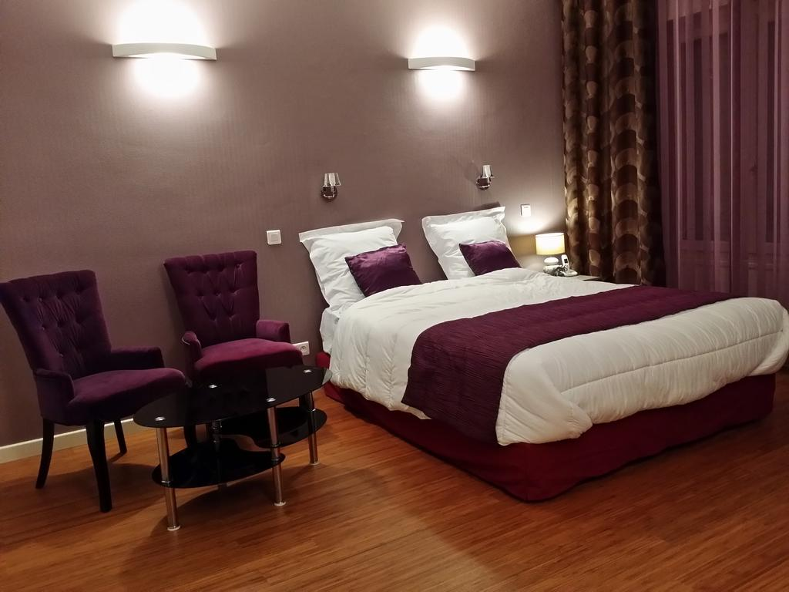

Le ScarlettC’est au cœur de Belleville, quartier des plus populaires et surprenants de Paris, que vous accueille l’Hôtel Scarlett. Laissé à l’abandon durant de nombreuses années, l’établissement a été reconçu en tenant compte de l’exigence de votre bien-être et de l’esprit convivial du XXème arrondissement. Scarlett a voulu rendre authentique chacune de ses 30 chambres, non seulement dans leur agencement mais aussi à travers une décoration originale et chaleureuse. Elle a ainsi cherché un thème commun à toutes ses chambres tout en les rendant uniques. Scarlett a choisi Belleville pour son caractère familial et dynamique, mais aussi parce que ce quartier offre un accès pratique à tous les plus beaux endroits de Paris. |
|
Adresse: 1 Rue Jouye-Rouve, 75020 Paris Site Web: www.hotelscarlett.com |
Horaires: 24h/24 du lundi au dimanche Contact: 01 77 38 81 81 |
BridgetNombreux sont les artistes à avoir rendu hommage au quartier de Ménilmontant, Bridget ne fait pas exception. Ce qui frappe en premier, c’est sa belle bâtisse d’angle, élégante, authentique, charmante… Une fois les portes franchies, vous vous sentirez comme chez-vous, mais en mieux. La décoration mêle habilement les genres pour rappeler le côté métissé de l’Est parisien. Ainsi, le bois et le carrelage bleu style « métro » côtoient les pierres apparentes, les vinyles au mur fascinent et les couleurs vitaminées apportent de la joie, comme un éclat de rire entre amis. Bridget a de nombreuses facettes. Pour faire de votre séjour une expérience personnelle, une attention toute particulière a été apportée au confort, aux services et à l’accueil bienveillant. À la manière d’un proche, notre équipe sera ravie de vous conseiller sur les bonnes adresses du quartier, son histoire, les incontournables de la vie parisienne ou encore vous distiller ses bons conseils. Bridget sera votre meilleure acolyte de voyage. |
|
Adresse: 258 Rue des Pyrénées 75020 Paris Site Web: www.hotelbridget.com/fr |
Horaires: 24h/24 du lundi au dimanche Contact: +33 1 77 38 82 82 |
Nadaud-HôtelSitué à une minute du cimetière du Père Lachaise, dans un environnement verdoyant, à deux minutes de la place Gambetta, le Nadaud Hôtel vous accueille dans une ambiance familiale et chaleureuse. Antoine Laval et toute l’équipe du Nadaud Hôtel sont à votre écoute et prêts à vous donner tout conseil utile pour vous aider à passer un agréable séjour à Paris.Vous trouverez à deux pas de l’hôtel théâtres et salles de concerts renommés, restaurants de tous horizons et rues commerçantes. Dans une rue très calme mais à une minute de la sortie du métro et des bus.La réception est ouverte tous les jours de 7h à 22h30. En dehors de ces heures, un service de réception et de réservation est assuré. Le Nadaud Hôtel est présent dans le guide du routard 2016. |
|
Adresse: 8 Rue de la Bidassoa, 75020 Paris Site Web: www.nadaud-hotel.com |
Horaires: 24h/24 du lundi au dimanche Contact: 01 46 36 87 79 |
Hôtel Paris GambetaCet hôtel du 20e arrondissement à l'ambiance décontractée se trouve à 2 minutes à pied de la station de métro Gambetta et à 6 minutes du cimetière du Père-Lachaise, où reposent Jim Morrison et Édith Piaf. L’hôtel paris gambetta est un établissement familial, proposant des chambres et des studios tout confort en location journalière. Le prestigieux cimetière du Père Lachaise se trouve seulement à quelques mètres, les transports en commun sont à proximité immédiate et le quartier est un vrai lieu de vie où se côtoient restaurants, cafés, théâtres, salles de cinéma et commerces. Entièrement rénové en 2017, l'hôtel est recommandé par le Guide du Routard et le Guide Michelin. |
 |
|
Adresse: 12 Avenue du Père Lachaise, 75020 Paris Site Web: www.hotelparisgambetta.fr |
Horaires: 24h/24 du lundi au dimanche Contact: 01 47 97 76 57 |
Hipotel Paris Père LachaiseL’hôtel Hipotel Paris Père Lachaise République est situé à 5 minutes de marche du Père Lachaise. Il propose des chambres dotées de la télévision par satellite et met à votre disposition une connexion Wi-Fi gratuite. Elles sont desservies par un ascenseur et possèdent une salle de bains privative avec une douche. Profitez de votre séjour, notre hôtel pour vous faire un pause et prendre le temps de découvrir le Quartier du Père Lachaise, vous serez entre Bastille et Faubour Saint Antoine, proche de la rue Roquette. Pensez à visiter le Sacré Coeur. Lors des petits déjeuners dans notre Hôtel le buffet continental est servi tous les matins. Des distributeurs de boissons sont disponibles. Le soir, vous pourrez vous détendre dans le coin salon de l’hôtel. La réception est ouverte 24h/24 et un service « bagagerie » est à disposition.l'établissement est non accessible aux personnes à mobilité reduite. |
|
Adresse: 37 Rue Servan, 75011 Paris Site Web: hotel-pere-lachaise.hipotel.fr/ |
Horaires: 24h/24 du lundi au dimanche Contact: 01 47 00 67 33 |
Restaurants |
Distraction |